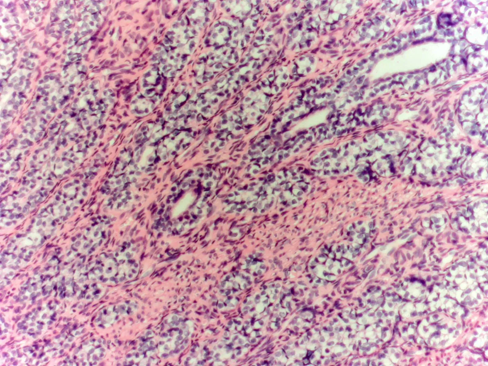
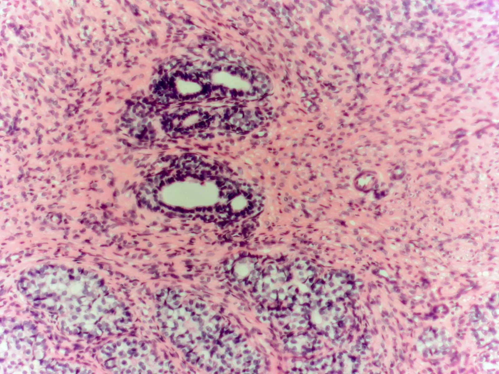
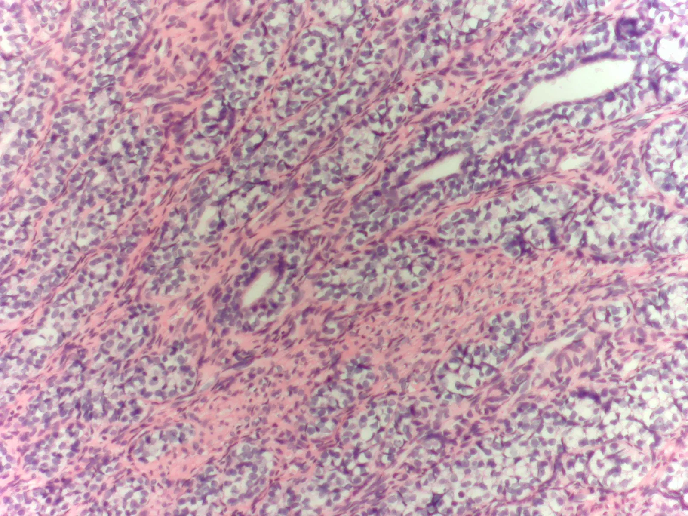
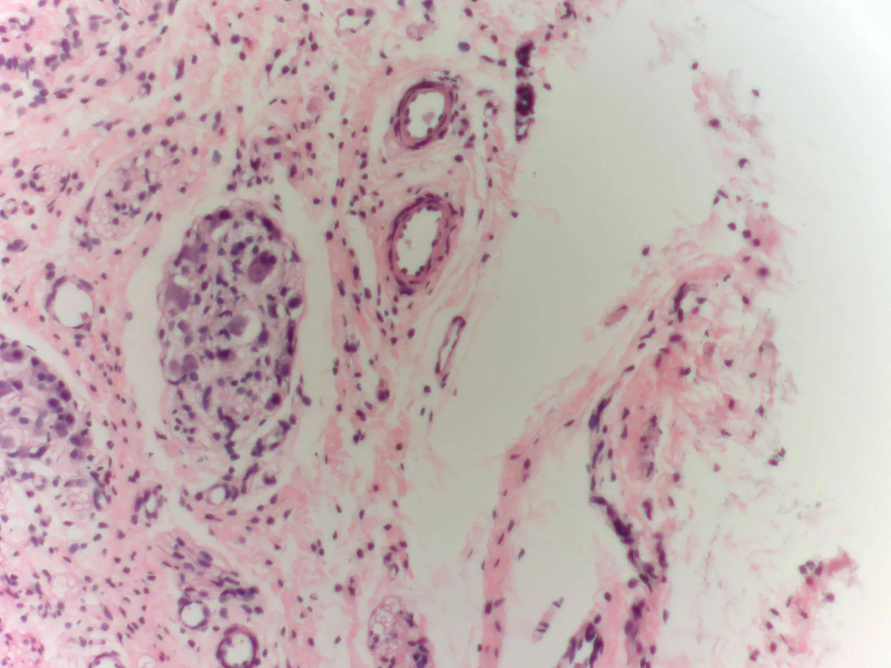
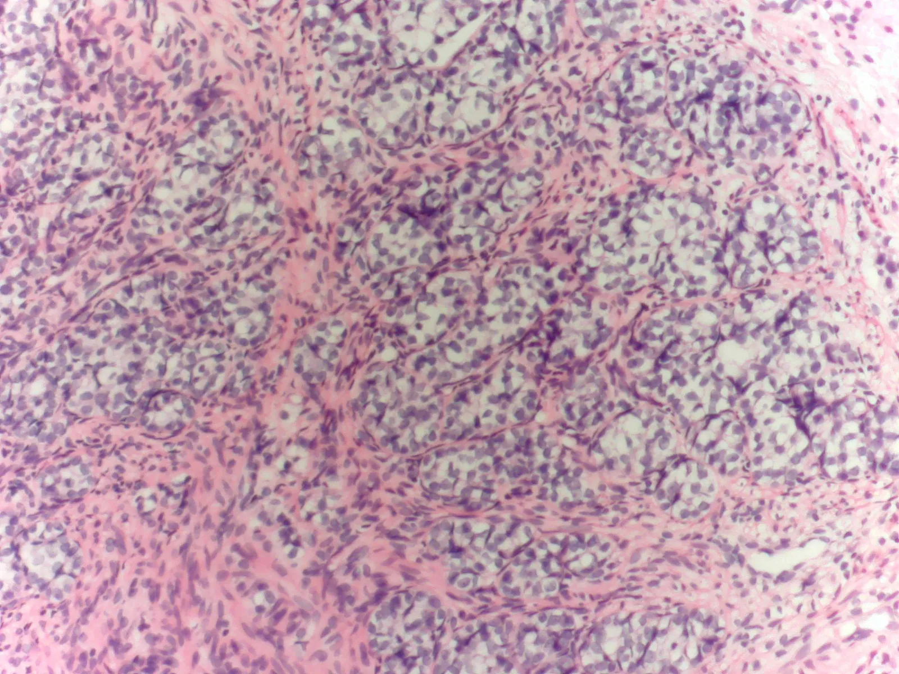
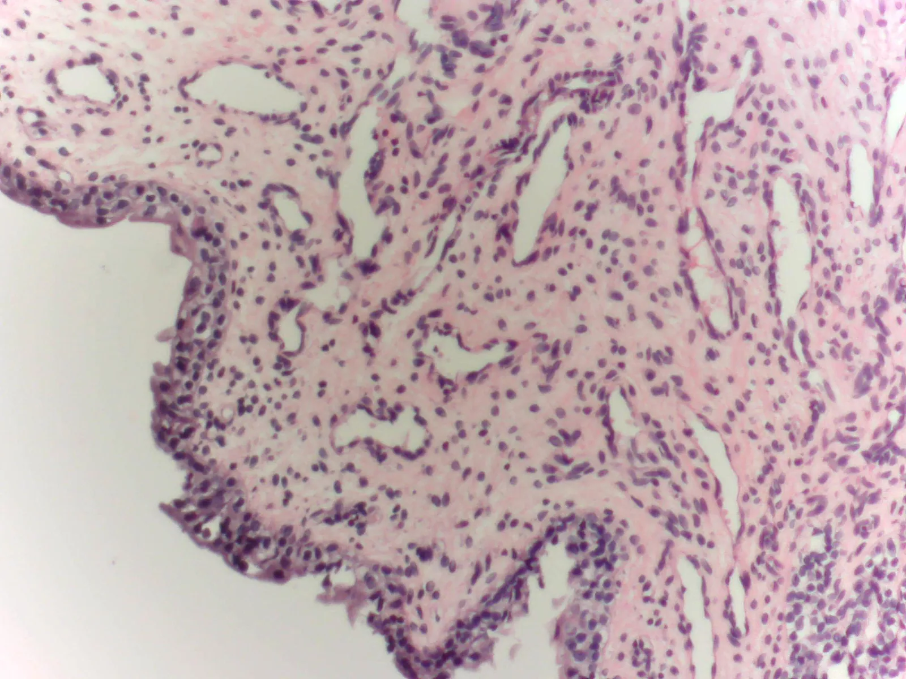

Lâmina 78 · Sistema reprodutor
Próstata






Toque na imagem para ampliar. No computador, use as setas do teclado para trocar de imagem.
Lâmina 78 · Sistema reprodutor






Toque na imagem para ampliar. No computador, use as setas do teclado para trocar de imagem.